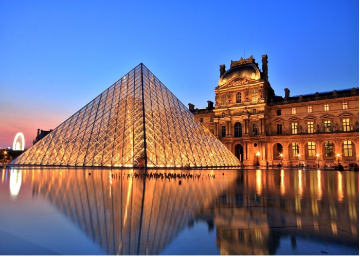

Museu do Louvre

Arquitetura do edifício
O Museu do Louvre está instalado no Palácio do Louvre, uma fortaleza do século XII que foi ampliada e reformada em diversas ocasiões. Antes de que se tornasse um museu, alguns monarcas como Carlos V e Felipe II utilizaram o palácio como residência real onde acumulavam suas coleções artísticas.
Depois da transferência da residência real ao Palácio de Versalhes, o impressionante edifício de 160.000 metros quadrados deu início ao seu processo de transformação a um dos museus mais importantes do mundo.
Em 1989 foi construída a pirâmide de cristal, rompendo a monotonia dos grandes blocos cinzas do museu e que atualmente serve como porta de acesso.
As exposições
A coleção do Louvre compreende cerca de 300.000 obras anteriores a 1948, das quais são expostas aproximadamente 35.000.
A imensa coleção está organizada de forma temática em diferentes áreas: antiguidades orientais, antiguidades egípcias, antiguidades gregas, romanas e etruscas, história do Louvre e o Louvre medieval, pintura, escultura, objetos de arte, artes gráficas e arte do Islã.
Entre as pinturas mais importantes do museu vale a pena destacar as seguintes:
Monalisa de Leonardo da Vinci.
- Liberdade Guiando o Povo de Delacroix.
- As Bodas de Caná de Veronese.
Entre as esculturas, as obras mais destacadas são:
- Venus de Milo da Antiga Grécia.
- O escriba sentado do Antigo Egito.
- Vitória de Samotrácia do período Helenístico da Antiga Grécia.
Um museu de grande nome e extensão
O Louvre é enorme e os amantes da arte podem passar vários dias passeando por ele. Para ter uma ideia geral e ver as obras mais destacadas, é necessário dedicar pelo menos uma manhã completa para percorrer o museu.
Se você se interessa pela arte e quer conhecer a fundo as obras do Louvre, o museu coloca à disposição de seus visitantes um audioguia com comentários sobre cada obra dessa galeria. Você pode fazer o download em seu celular ou no Nintendo 3DS.
mbora o Museu do Louvre seja muito importante a nível mundial, para as pessoas que não são muito interessadas em arte ele pode acabar se tornando um passeio cansativo devido às suas enormes dimensões, além do calor e das aglomerações.